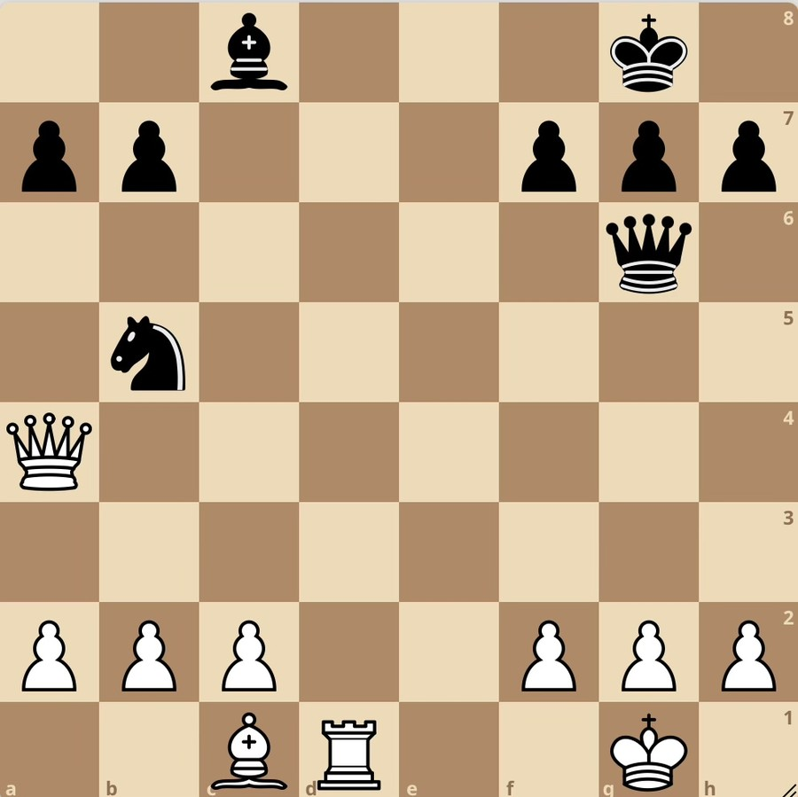

Профессиональный шахматный тренер
Шахматы как тренировка мышления, а не кружок по запоминанию ходов
Ребенок на занятии не пассивный слушатель: он постоянно решает, спорит, проверяет идеи и учится объяснять свои решения.
- Более 2500 проведенных занятий
- Ученики от 3 до 77 лет
- Преподаю шахматы на английском
01
Как я работаю
Сначала я смотрю, как ребенок думает: торопится ли с ответом, замечает ли угрозы, как реагирует на ошибку, может ли удержать задачу до конца.
В моих занятиях есть игра, азарт, спор, понятные метафоры, мемы. За счет этого дети не отсиживают час, как обычно, а включаются намного живее, чем на обычном уроке.
Мальчики, которые ненавидели думать, но обожали футбол, через футбол разобрали со мной половину позиционной игры, от которой даже у взрослых включается сонный рефлекс.
Основной акцент на глубоком понимании происходящего на шахматной доске и интересных упражнениях, прокачивающих логику и креативность.
Концептуально против зубрежки.

Правило Ласкера
Эмануил Ласкер, второй чемпион мира: увидел хороший ход — поищи лучше.
Белые могут забрать коня. Забираем?
Инструменты ScienceChess
Я разрабатываю собственные шахматные тренажеры, которые тренируют внимание, принятие решений и скорость. Использую их на занятиях.
02
Кому подходит
Ко мне часто приводят детей, которым скучно на обычных занятиях и трудно сидеть в роли пассивного слушателя. Некоторые приходят уже уверенными, что шахматы просто не для них, — но после смены формата начинают заниматься с интересом и остаются надолго.
Ребенку скучно на обычных шахматах
Правила знает, но монотонные задания быстро убивают интерес.
Умный, но торопится
Видит идеи, но отвечает раньше, чем успевает проверить решение.
Трудно удерживать внимание
Нужен диалоговый и динамичный формат вместо часа пассивного слушания.
Хочется не только шахматного результата
Родителям важны мышление, самостоятельность и отношение к ошибкам.
Формат подойдет родителям, которые хотят для ребенка не просто очередной кружок с нейрослопом про разряд за три месяца, а индивидуальную интеллектуальную нагрузку с понятной обратной связью.
03
Отзывы
04
О себе
- 2700Lichess рейтинг
- 2500+ проведенных занятий
- 3–77 возраст учеников
- ScienceChess автор метода
Победитель соревнований по ментальной арифметике и математике, участник научных конференций и форумов.
Занимался футболом, боксом и вокалом — это помогает подобрать ключи к самым разным детям.
Среди учеников — предприниматели, IT-специалисты, модели и профессиональные бойцы. Для своих учеников создал ряд бесплатных материалов.
05
Формат и география
Очно
Очно работаю в северной Москве: Речной вокзал, Беломорская, Ховрино, Водный стадион.
Онлайн
Доступны занятия онлайн: за счет моих разработок, упражнений и ботов они могут быть даже более эффективными.
Провожу занятия и на английском языке.